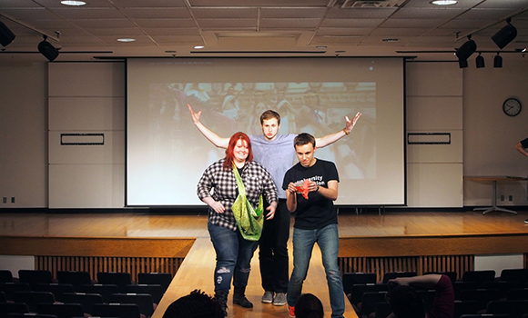
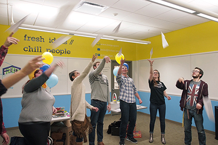
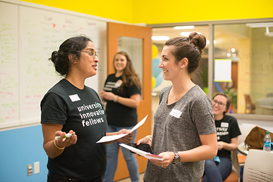
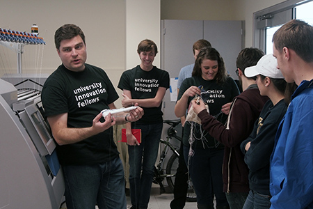
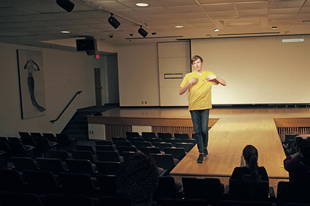
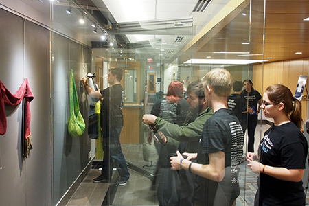

Students forged new collaborations and learned how to connect their disciplines with fashion and tech at the University Innovation Fellows Kent State Regional Meetup.

Sami Glass, Paul Dilyard and Ryan Phillips show off their creations on the runway at the University Innovation Fellows Kent State Regional Meetup. Photo by Laurie Moore.
by Laurie Moore
At the end of the fashion show, after the music was turned off and the lights were dimmed, the designers discussed the creation process.
“I had to think in 3D. Actually, 4D: how something changes over time.”
“It was terrifying to think of cutting the uncut fabric. I had to have faith that it was going to be ok.”
“I kept hoping that the backstitch was going to undo. It did the opposite!”
If this doesn’t sound like what professional fashion designers would say, it’s for good reason. The designers here were students from different backgrounds who came together for a daylong wearables makeathon at Kent State University. On November 6-8, 2015, Kent State hosted a University Innovation Fellows Regional Meetup, which was designed and hosted by Fellows and their faculty sponsors and mentors. Attendees included Kent State students as well as Fellows from the University of Minnesota, the University of Delaware, the University of Oklahoma, Kent State’s main campus and the Kent State University at Stark campus.
This event was an opportunity for students to explore the connections between their disciplines and the world of fashion, design and technology to create new human-centered innovations.

Fellows take part in a warm-up exercise during the Kent State Meetup. Photo by Laurie Moore.
The event began on November 6 with a ribbon cutting to officially open The Fridge, a co-working space at the library created by University Innovation Fellows Robin Bonatesta and Paul Dilyard. The space is unique for a library; the door is always open, noise limits do not exist, and students from all majors are welcome.
“The Fridge is a symbol of the movements that are starting in this community of makers and entrepreneurs,” Bonatesta said. The space, she explained, is an experiment to provide a place where students can meet and collaborate on projects that span different disciplines. There are no set schedules, no permanent faculty or staff, and no rules about what students can do there. “I would love to see it be more widely used by different majors who are building collaborative projects,” she said.
James Bracken, Dean of the Kent State Libraries, spoke to the attendees during the ribbon cutting ceremony. During the last decades, he has seen the libraries evolve from only providing a books and resources to providing a combination of space, collections and services. “The newest model in libraries is to have group study rooms like the one over there,” he said, gesturing to a door across the room. “What’s wrong with that picture? The door is shut. How many students are in there? One. The Fridge offers a model that turns this on its head.”

Kent State Fellows launched The Fridge, a co-working space in the library. Photo by Ryan Phillips.
Julie Messing, Executive Director for Entrepreneurship Initiatives at Kent State, and University Innovation Fellows leaders Humera Fasihuddin and Leticia Britos Cavagnaro also spoke at the ceremony about the leadership of students in developing this space. To experience the open and collaborative nature of The Fridge, the participants took part in a design thinking challenge around the theme of the college advising and mentoring process.
On Saturday, November 7, the event moved to the other side of the Kent State campus to the Fashion School’s Tech Style LAB. Participants explored the lab, which combines traditional fashion design methods with high-tech design equipment such as laser cutters and weaving machines. A machine that looked like a paper printer was revealed to be a fabric printer when the school’s professor and director J.R. Campbell peeled a printed layer of delicate silk from paper backing, eliciting gasps from the group.
During the first half of the day, students learned how to drape fabric, sew, use the laser cutting machine, and program arduinos. The second half of the day, they were presented with the challenge of designing a wearable — whether it was a piece of clothing or an accessory, high- or low-tech — that was connected to their majors or areas of interest. For the students, the majority of whom had no experience with fashion, this opportunity to design and implement a project in under five hours was a unique one, especially considering that many had just learned to sew that morning.

Kevin Wolfgang, manager of the Tech Style LAB, explains how the knitting machine works. Photo by Laurie Moore.
Kevin Wolfgang, the Tech Style LAB manager, who guided the participants through the day’s activities, said that this constraint was intentional. “You have to shut your brain off to get something made. If you second guess all of your decisions, you get nothing done,” he said. The main constraint was not the time limit alone, but the knowledge that at 9 pm that night, every single person had to walk down the runway to showcase what they’d made. Their creations had to look like something, they had to tell a story, and they couldn’t fall apart. When Wolfgang turned on the lights and cued up the music at the end of the make-a-thon, it was show time.
Josh Halverson, a mechanical engineering major from the University of Minnesota, walked the runway to showcase a piece of wearable technology that he created. He said he was inspired by his mother, who recently recovered from cancer. When creating his wearable, Halverson imagined a patient in a doctor’s office who had just received very good or bad news and who, as a result, might not be in a state of mind to remember the doctor’s advice. To solve this challenge, his device records sound when a user’s heart rate increases or decreases significantly in parallel with the patient’s emotional state. The user would be able to listen to the recording at a later time.

Fellow Josh Halverson from the University of Minnesota displays his wearable on the runway. Photo by Laurie Moore.
Zachary Jones, and entrepreneurship major from the University of Delaware, started the day by creating magnetized shoelaces, but he pivoted mid-day and designed a maroon scarf instead. He compared the creation of the scarf to painting, which he does as a hobby. “Usually, when I paint, I put something down and see where it goes from there. With this, you really have to start with the end in mind, which was a great takeaway for me,” he said.
Sami Glass, a computer science major from the Kent State Stark campus, designed a lined green fabric purse. She reported some challenges with the sewing process: “You have to sew. You can’t just poke holes.” She laughed as she recalled finishing the stitches on a large piece of the purse only to realize there wasn’t thread in the sewing machine bobbin.
For the attendees, many of whom were not familiar with fashion design, the creation process was unfamiliar but rewarding in the end.
“When you’re writing a program, it’s very linear,” said Ryan Phillips, a Fellow and computer science alumnus of Oklahoma State University who now works at Microsoft. Phillips, who also ran the design thinking challenge the previous night, created a sock for an infant that monitors vital signs that can be accessed via a parent or doctor’s smart phone. “When I was creating the sock, it looked nothing like it should have. And I just did this one seam and boom, it came together. Having that ability to conceptualize it when it doesn’t look anything like itself was different for me.”

The runway show wasn’t the end of the event. On Sunday morning, participants gathered at the MuseLab at Kent State’s library to create a museum exhibition for their creations. This third step required them to help others understand the story of their creations without being there to explain the meaning. The students were assisted by Kiersten Latham, professor and director of the MuseLab, and three of her graduate students in museum studies. Students were challenged to tell the story of their piece using only their display and a small card. They were given an hour, a wall-length glass case and a room of museum display supplies including mannequins, pedestals, frames, signs and lights.
“There’s so much power in the display,” Zachary Jones said, after he had hung his scarf behind museum glass. “That is something I’ll take back to campus. We have an innovation and entrepreneurship showcase in April, but nobody sees what comes out of that. We could do something similar to what we did here.”

Participants create an exhibition of their work in the MuseLab. Photo by Laurie Moore.
Several participants created items related to the medical field, and they worked on an exhibition that would combine all of their projects. Josh Halverson’s audio recording device joined other objects including Ryan Phillip’s smart sock.
“I really liked this format where we had the makeathon, the runway and then this exhibit culmination,” Halverson said. “I also learned about how to get different people working towards one common goal.”
Ella Zurawski, a Kent State fashion merchandising major, modeled a dress created by Kevin Wolfgang as well as a pair of elaborate laser cut glasses that she made. “This display step provided a way to think differently about what you had made,” she said “When you’re making it, you ask, ‘How can I make it better?’ It’s introspective. Then, when you’re trying to present it, you ask, ‘How can I make other people experience it too?’ It’s very different.”
Throughout the event, the students discussed the lessons and themes that were woven into the experience: the value of telling a story, connecting with others, trusting the process, and pushing ahead from concept to creation. They agreed that ideation process is important, but it’s just as vital to create, even if the result is not perfect.
As Wolfgang said as the group debriefed after the runway show, “At some point you just have to jump. If it’s right or wrong, works or doesn’t, it’s ok. Just keep dancing.”